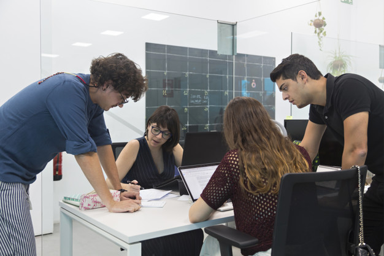

Recursos Educativos Abiertos (REA)
"Cuando compartimos, todos ganamos"
 El uso de las TIC en la educación puede fomentar el aprendizaje y desarrollo personal, en un marco mucho más flexible que los niveles educativos existentes. Abarca un mayor campo de acción. El tipo de aprendizaje desarrollado dependerá del sentido y supuestos epistemológicos en que se base el modelo de enseñanza, lo que hace a la enseñanza mediante TIC no diferenciarse especialmente de cualquier otro sistema de enseñanza en ese aspecto. Siendo mucho mas estricto. La incorporación de las Tecnologías de Información y comunicación (TIC) al proceso podría facilitar su integración educativa e inclusión escolar. Un efecto derivado sería la mejora de sus condiciones laborales y calidad de vida. Esta emergente sociedad de la información, impulsada por un vertiginoso avance científico en un marco socio económico y sustentada por el uso generalizado de las potentes y versátiles tecnologías de la información y la comunicación_ (TIC), conlleva cambios que alcanzan todos los ámbitos de la actividad humana. Sus efectos se manifiestan de manera muy especial en las actividades laborales y en el mundo educativo, donde todo debe ser revisado: desde la razón de ser de la escuela y demás instituciones educativas, hasta la formación básica que precisamos las personas, la forma de enseñar y de aprender, las infraestructuras y los medios que utilizamos para ello, la estructura organizativa de los centros y su cultura... En este marco, se identifica tres posibles reacciones de los centros docentes para adaptarse a las TIC y al nuevo contexto cultural.